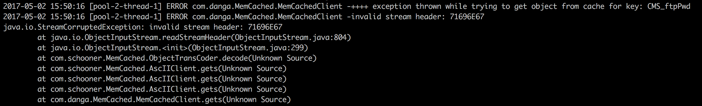
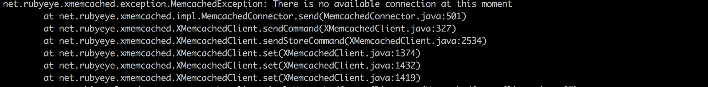

更换memcached客户端总结
背景
最近公司生产环境经常反映memcached存在连接异常：断掉连接后，导致应用挂掉。怀疑java-memcache-release的版本较老导致（版本2.6.6），准备更换下客户端。对比了以下三个客户端，最终选择了xmemcached作为memcached客户端（性能+文档全面）。
| memcached客户端 | maven中央仓库引用数 | GitHub Star | 文档 | |
|---|---|---|---|---|
| java-memcache-release（原来使用） | 10 | 605 | 简单描述 | |
| xmemcached (更换为该客户端) | 36 | 515 | 文档全面 | |
| spymemcached | 114 | 107 | 需vpn才能访问 |
问题处理
更换客户端后遇到了以下几个问题：
使用xmemcached时，推荐使用二进制协议，如果使用文本协议，会存在如果缓存的非String对象存储后，获取时报类型转换异常，使用二进制协议用到了Java的序列化机制：
在开始测试时原来java-memcache-release客户端在memcached中存储的数据还存在，新的客户端，获取时无法识别，解决办法，把现在memcached中缓存的数据flushAll()。然后大家使用统一的客户端(同事协助解决)：

memcached对过期时间的设置分为两种情况：a).小于等于30天，设置过期的秒，如3天：3x24x60x60=259200（30天设置可以设置为0）；b).大于30天的只能使用Unix时间戳的形式，且仅支持到2038-01-19 11:14:07(因我们传递给过期时间是int类型，int类型最大值：2147483647，转换为时间戳就是这个时间)。当时未认识到该问题时，曾尝试设置365x24x60x60 = 31536000（对应时间1971-01-01 08:00:00），由于该时间已经过去，缓存时后数据就已过期，导致缓存无效，应用每次刷新页面都是读的数据库，缓存并未用上。考虑到为了避免以后到达2038年解时间戳问题问题，现使用默认最长30天的过期时间，其已满足项目需求。
连接池连接不够使用：原来设置的池中有5个连接遇到如下报错，问题二与三解决后，未再遇到。现修改池中为10个连接，后面持续跟进。

参考